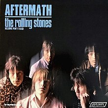
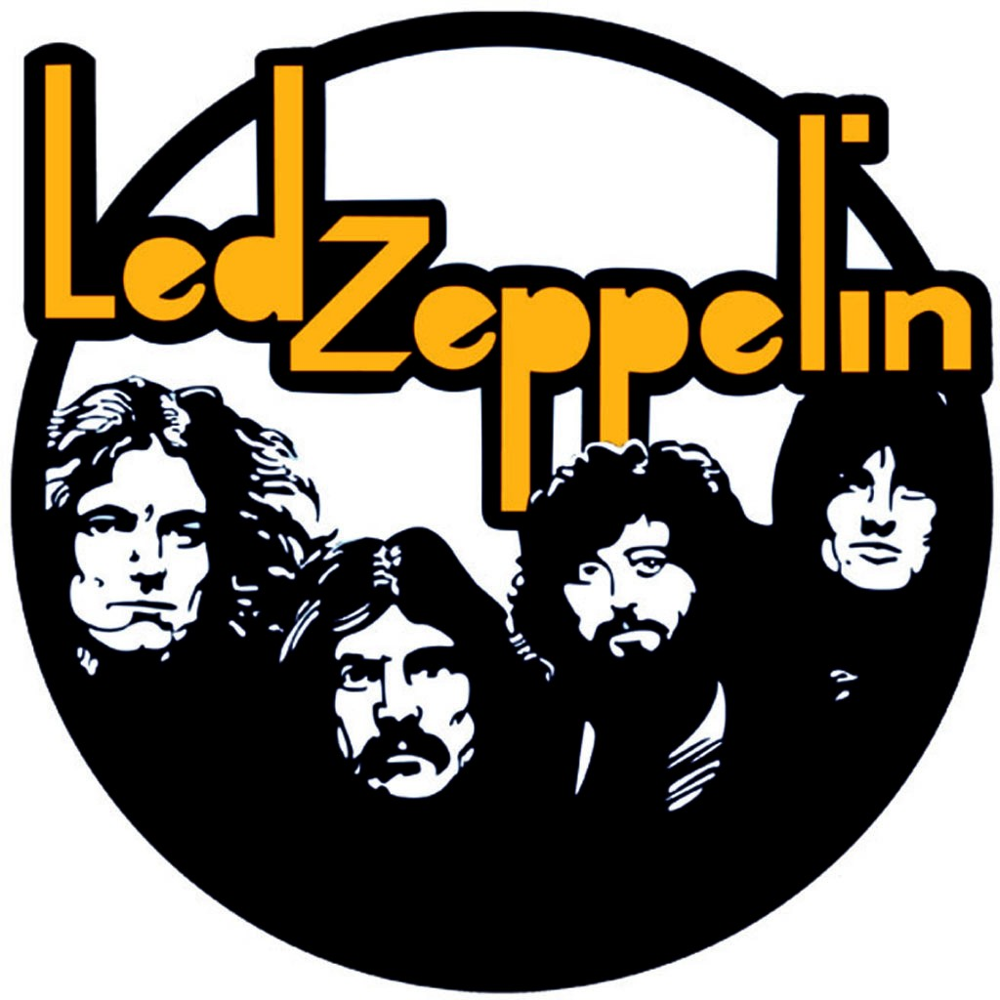
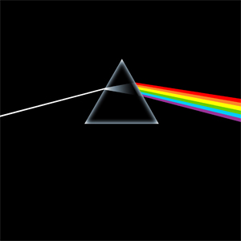
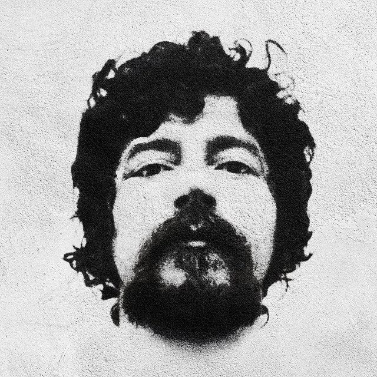

A EXPLOSÃO DO MAIOR MOVIMENTO MUSICAL DO MUNDO
Muitos artistas foram importantíssimos para a industria do Rock
Por isso selecionamos alguns dos mais influentes rockeiros e rockeiras da história.

The Beatles foi uma banda de rock britânica formada em 1960
na cidade de Liverpool.
Formada por John Lennon, Paul McCartney, George Harrison e Ringo Starr,
é considerada a banda mais influente de todos os tempos.
The Rolling Stones é uma banda de rock britânica formada em Londres no ano de 1962, considerada um dos maiores, mais antigos e mais bem sucedidos grupos musicais de todos os tempos. A banda e seus membros ocuparam posição de destaque nas mudanças musicais e comportamentais dos anos 1960 e são frequentemente relacionados com a contracultura, rebeldia e juventude da época.


Led Zeppelin foi uma banda britânica de rock
formada em Londres, em 1968. Consistia no guitarrista Jimmy Page.
Seu som pesado e violento de guitarra, enraizado no blues e música psicodélica
é frequentemente reconhecido como um dos fundadores do heavy metal.
A música "Stairway to Heaven", está entre as obras
mais populares e influentes do rock e ajudou a consolidar a popularidade
do grupo.
Pink Floyd foi uma banda britânica de rock formada em Londres em 1965. Eles se destacaram por suas composições longas, pela experimentação sonora, pelas letras filosóficas e pelas apresentações ao vivo criativas, o que levou a se tornarem uma banda líder do gênero do rock progressivo. Eles são um dos grupos mais bem-sucedidos comercialmente e influentes da história da música popular.

